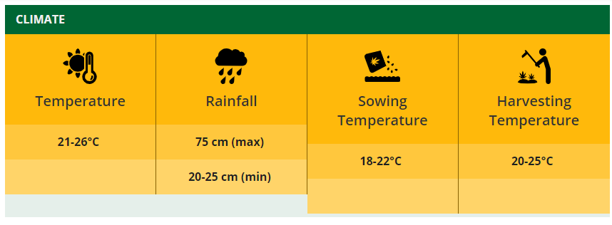

About Wheat
Wheat is grown on 13 percent of the cropped area of India. Next to rice, wheat is the most important food-grain of India and is the staple food of millions of Indians, particularly in the northern and north-western parts of the country.It is rich in proteins, vitamins and carbohydrates and provides balanced food. India is the fourth largest producer of wheat in the world after Russia, the USA and China and accounts for 8.7% of the world’s total production of wheat.Wheat is the main cereal crop in India. The total area under the crop is about 29.8 million hectares in the country. The production of wheat in the country has increased significantly from 75.81 million MT in 2006-07 to an all time record high of 94.88 million MT in 2011-12. The productivity of wheat which was 2602 kg/hectare in 2004-05 has increased to 3140 kg/hectare in 2011-12. The major increase in the productivity of wheat has been observed in the states of Haryana, Punjab and Uttar Pradesh. Higher area coverage is reported from MP in recent years. Indian wheat is largely a soft/medium hard, medium protein, white bread wheat, somewhat similar to U.S. hard white wheat. Wheat grown in central and western India is typically hard, with high protein and high gluten content.
India also produces around 1.0-1.2 million tons of durum wheat, mostly in the state of Madhya Pradesh. Most Indian durum is not marketed separately due to segregation problems in the market yards. However, some quantities are purchased by the private trade at a price premium, mainly for processing of higher value/branded products. The production and productivity of Wheat crop were quite low, when India became independent in 1947. The production of Wheat was only 6.46 million tonnes and productivity was merely 663 kg per hectare during 1950-51, which was not sufficient to feed the Indian population. The Country used to import Wheat in large quantities for fulfilling the needs of our people from many countries like USA under PL-480. The reasons of low production and productivity of Wheat at that time was (a) the tall growing plant habit resulting in lodging, when grown under fertile soils, (b) the poor tillering and low sink capacity of the varieties used, (c) higher susceptibility to diseases, (d) the higher sensitivity to thermo & photo variations, etc., resulting in poor adaptability, and (e) longer crop duration resulting in a long exposure of plants to the climatic variations and insect pest / disease attacks.
The Government of India appointed a commission in 1961 to assess the feasibility of increasing the crop productivity under prevailing Indian ecological conditions. As result of various steps taken by Govt. of India, the Wheat scenario in our country has completely changed. In the post Independence era, country used to import Wheat for our needs but due to bumper increase in the production and productivity of Wheat in the 'Green Revolution' period in late sixties, our country became self dependent in Wheat production. At present, country is producing much more excess Wheat than the requirement and Godowns are over-flooded with Wheat.
